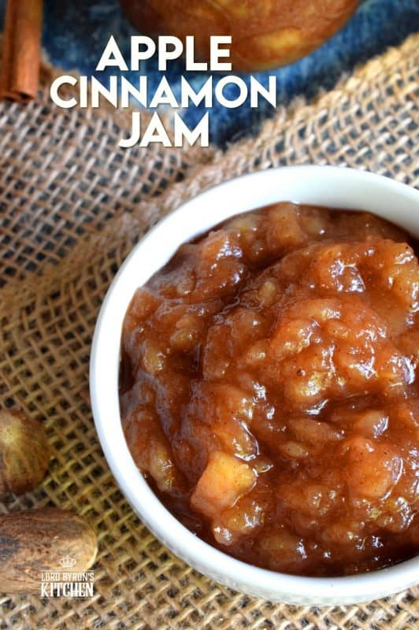

Apple Cinammon Jam

Description
Delicious jam made of jam and cinammon that's easy to make and perfect for all time of the year. To serve with anything you might want to it with.
Ingredients
- 2.5kg apples
- 140ml water
- 2 tbsp lemon juice
- 400g sugar
- 3 tbsp cinammon
Steps
- Sterilise mason jar
- Peel the apples and remove the core., Wash under running cold water to remove all traces of seeds or core remains. When done, roughly chop each apple into bite-sized pieces
- Place the chopped apples in a large sauce pan or pot. Add the water and bring to a boil over medium heat. Gently boil for 20 minutes.
- Add the lemon juice and the sugar and stir until dissolved. Bring back to a low boil. Continue to boil uncovered over medium heat for 20 minutes, depending on how thick you prefer your jam to be. DO NOT walk away from the jam once you add the sugar. The sugar will burn quickly and easily. Continue to stir and carefully monitor the progress.
- In the meantime, fill your water bath canner to the halfway mark with water and add the jar rack. Bring to a full boil.
- Next, add the nutmeg, ginger, cloves, and cinnamon. Stir into the jam mixture until well incorporated.
- Ladle the jam into prepared mason jars using a funnel to prevent the jam from touching the rim of the jars.
- Use the non-metallic bubble remover to remove any air bubbles.
- Wipe down the rim of each jar with a damp paper towel to ensure no jam has come in contact with the rim.
- Carefully remove the sealing discs from the hot water with a magnetic lid lifter. Position the sealing disc directly onto the lid of the jars. Do not touch the underside of the lid.
- Screw on the screw bands until firm. Do not apply pressure! Just use your fingertips to tighten the screw bands.
- Using the jar lifter, place the jars into the water bath canner with the boiling water. Do not place the lid on the canner.
- Boil for 20 minutes. Carefully remove each jar from the canner using the jar lifter. Try not to tilt the jars. Place jars onto a wire cooling rack that has been covered with a clean kitchen towel.
- Leave the jars to cool for a minimum of 12 hours. Once cooled, wipe the jars of any residue that might have been transferred to the outside of the jar during the boiling process. Label the jars and store in a dark, cool cabinet for up to one year.